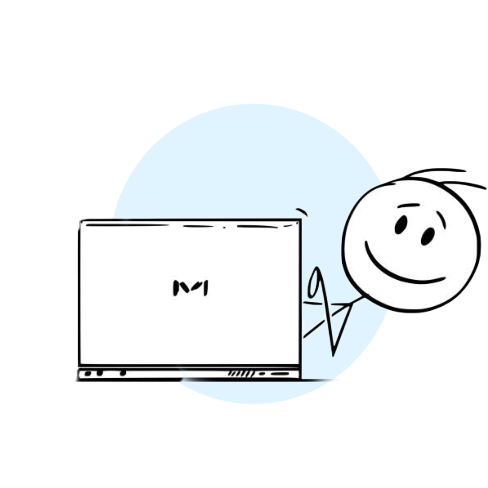

Job Information
Are you looking for a new job opportunity? Our company offers a wide range of job vacancies with various specifications, qualifications, and information. We invite you to explore our job vacancies and learn more about the requirements and details associated with each position. With our comprehensive selection of job postings, you are sure to find the perfect fit for your skills and experience. So, take a look at our job vacancies and start your journey to a new career today!
Trainee Website Developer
Job Description
A Trainee Website Developer is responsible for developing and maintaining websites for a variety of clients. This involves creating and modifying webpages, coding, and troubleshooting any technical issues that arise. The Trainee Website Developer must have a strong understanding of HTML, CSS, JavaScript, and other web technologies. They should also have experience with content management systems such as WordPress and Drupal. Additionally, the Trainee Website Developer should have excellent communication and problem-solving skills, as they will be working with clients to ensure their websites meet their needs. The Trainee Website Developer must also be able to work independently and as part of a team.Details
Job Type Working Full-TimeSalary £22,000 a yearSchedule Monday to Friday
Qualifications
Looking for a junior website developer with experience in HTML, CSS, and JavaScript, and a basic understanding of database design and web hosting.
Skills
- Capable of coding computer programs
- Persistence and resilience
- Problem solving skills
- Maths knowledge
- Knowledge of operating systems, hardware & software
Benefits
The job trainee website developer provides a number of benefits to those looking to enter the field of web development. It allows individuals to gain hands-on experience in developing websites, while also learning the fundamentals of web development. This job trainee program provides a great opportunity to learn the basics of coding, design, and other web development skills, while also gaining real-world experience.
Additionally, this job trainee program allows individuals to gain valuable experience in the industry, which can help them when applying for jobs in the future. Furthermore, this program can help individuals develop the skills needed to become an effective web developer and to create websites that are both attractive and functional. All in all, the job trainee website developer program is a great way to gain the skills and experience needed to succeed in the web development field.
We have stopped hiring.
❝There are three responses
to a piece of design — yes, no, and WOW! Wow is the one to aim for.❞
Milton Glaser
❝Simplicity is the ultimate sophistication.❞
Leonardo Da Vinci